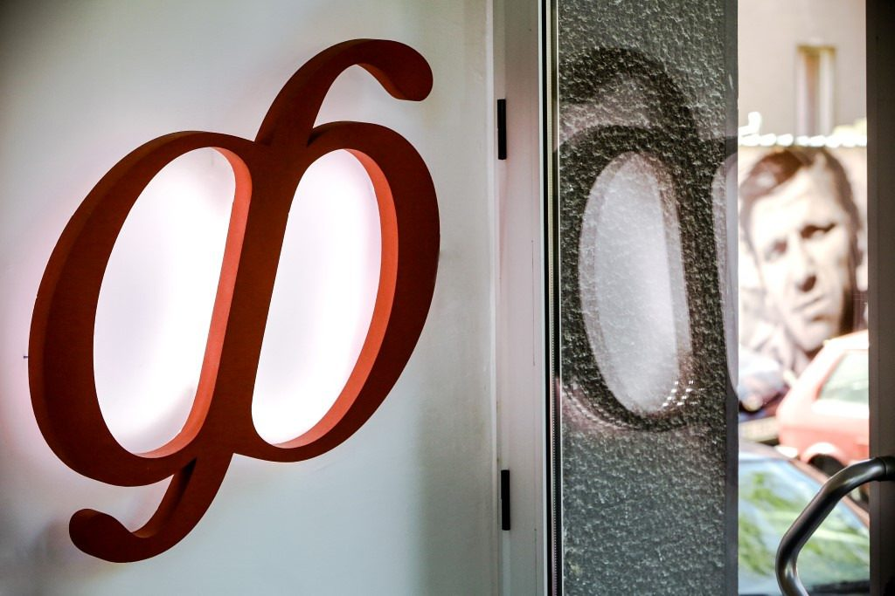
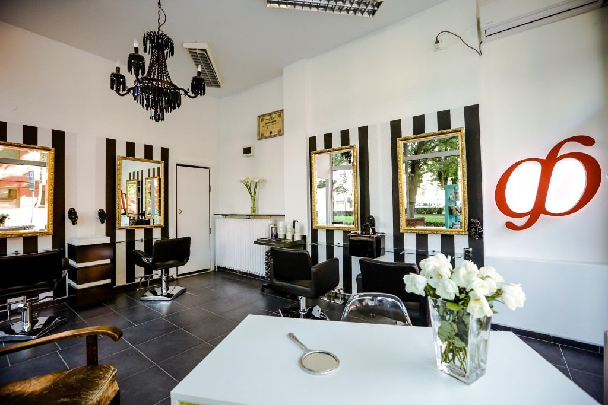
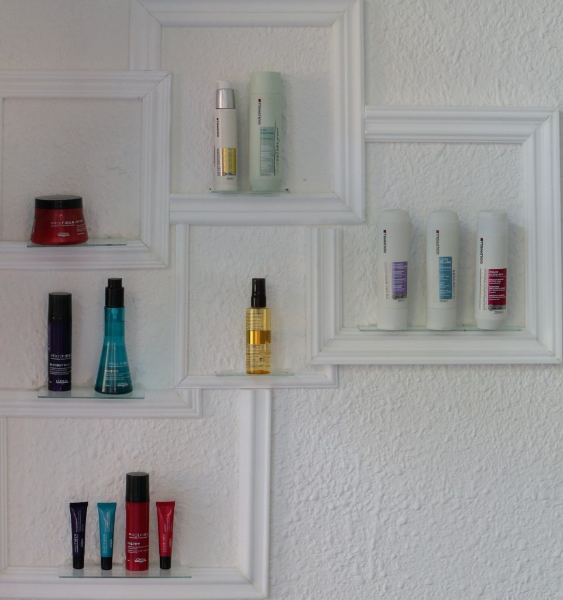
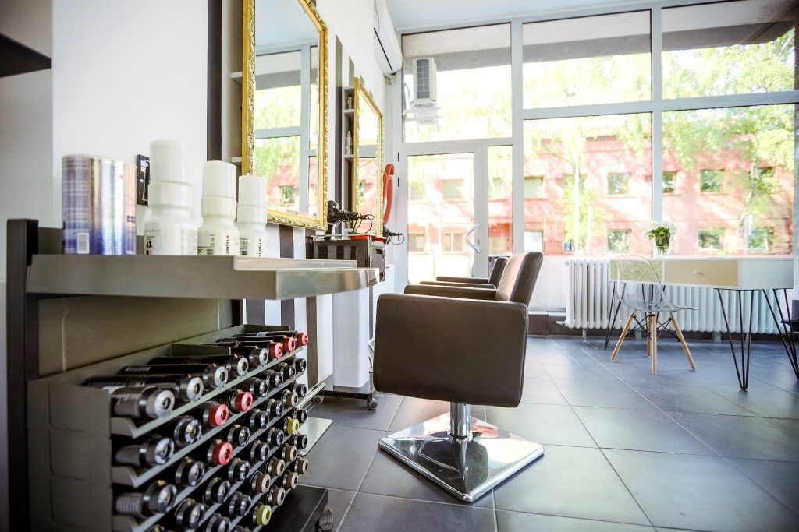
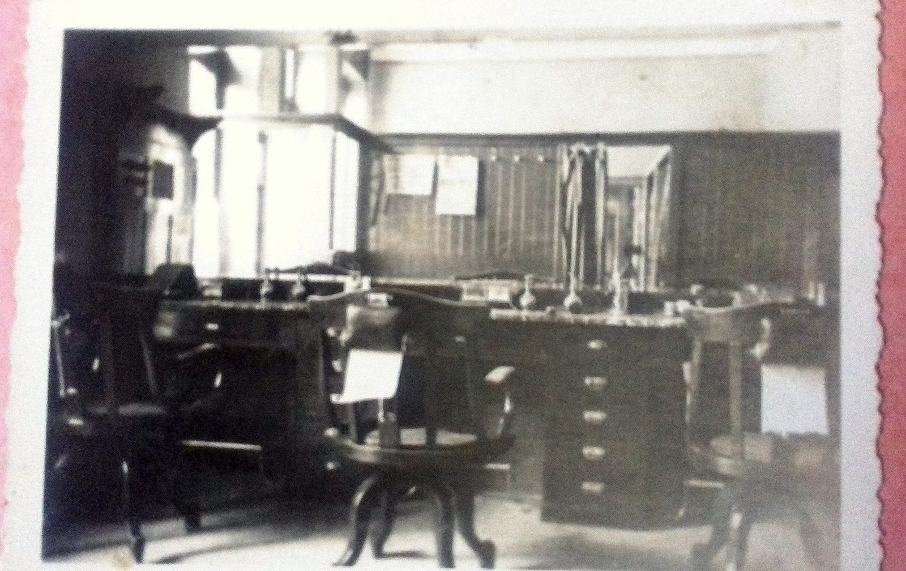
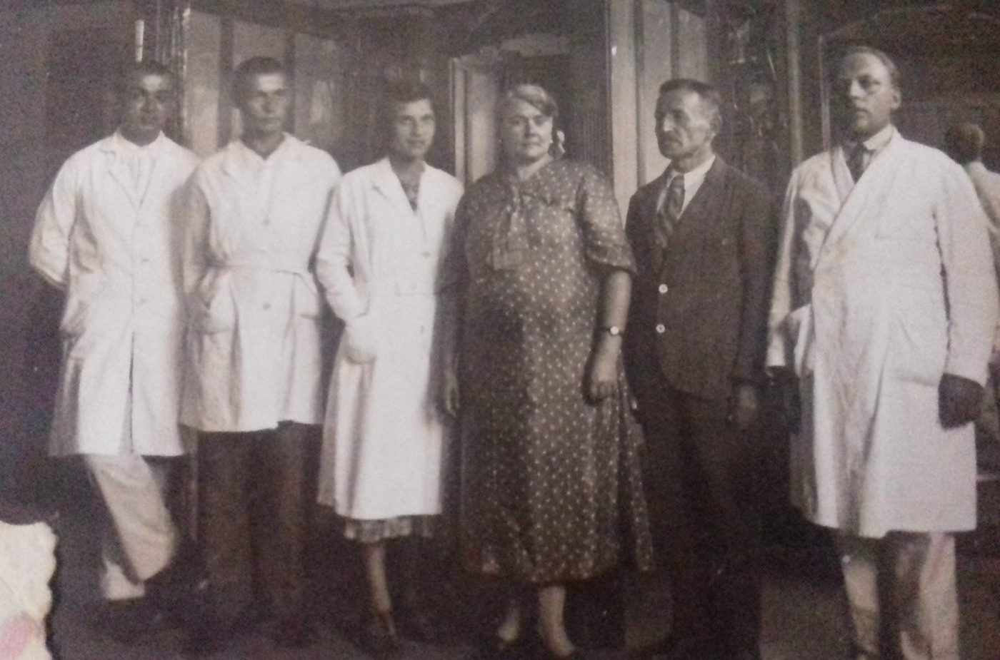
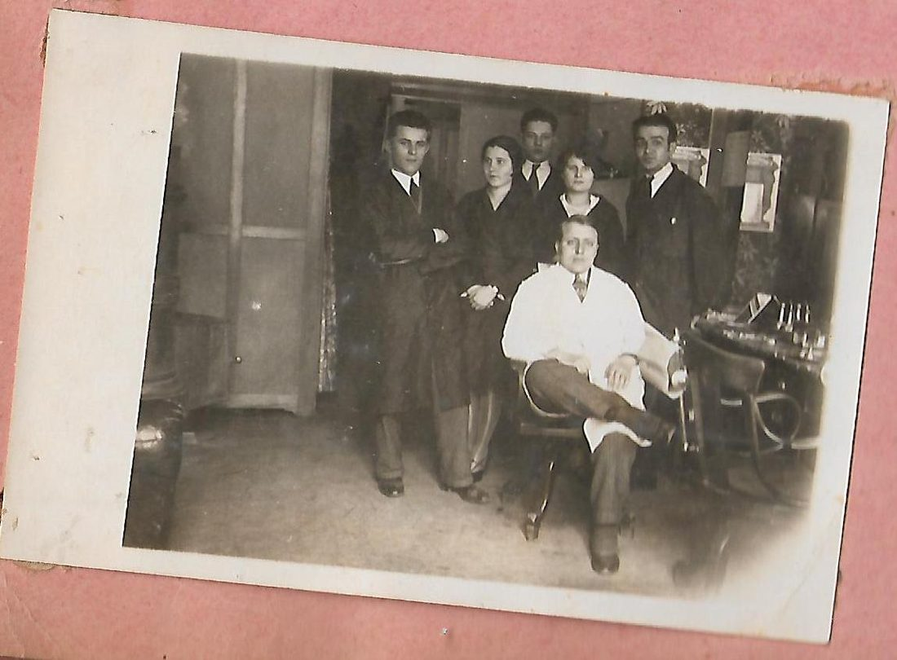
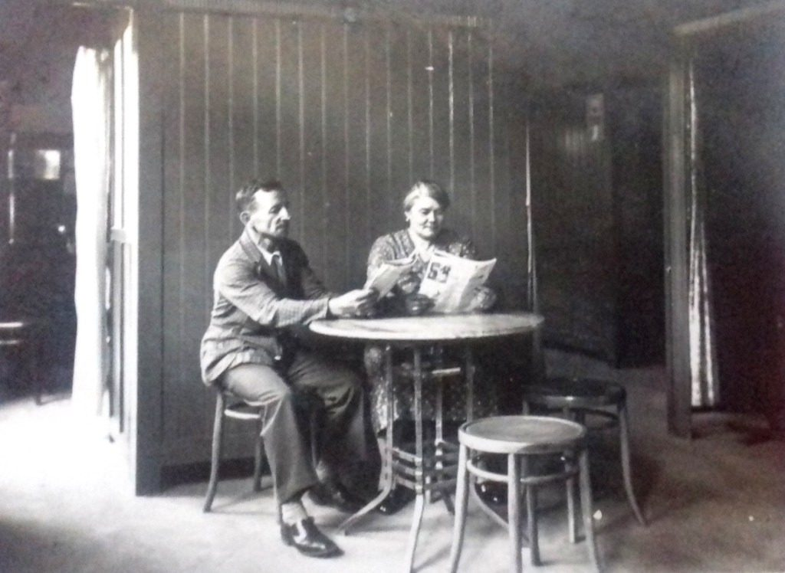
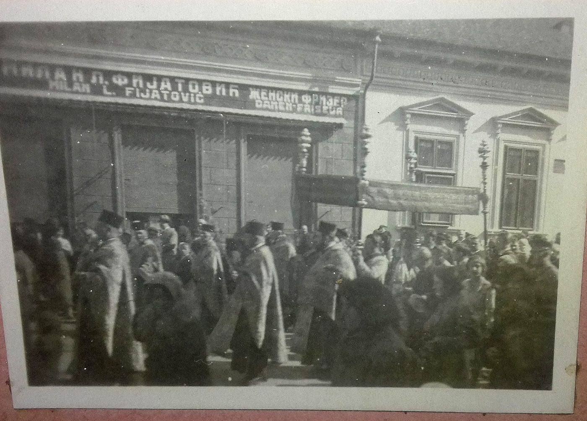
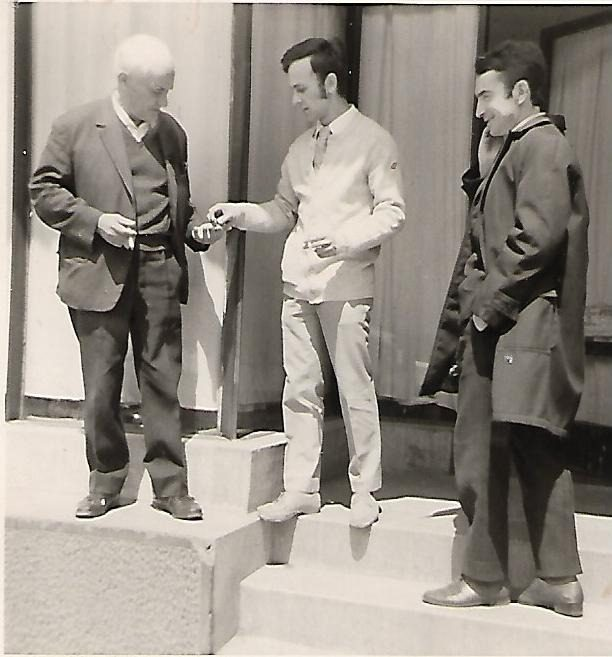

Tradicija dužaod jednog veka.
Usko smo specijalizovani za promene oblika, boje, teksture i nege kose. Pet generacija frizera, 145 godina zanata i, pre svega, stručan i iskren savet pri svakom dolasku.
- 145 godinazanata, pet generacija
- Goldwellispravljanje i boje
- Savet za neguposle svake promene



Pre svega, stručan i iskren savet.
„Lepa i negovana kosa čini da se dobro osećamo u vezi sa samim sobom.”
Dolaskom u naš salon dobijate savet kako da ulepšate kosu, popravite njen kvalitet i olakšate svakodnevnu rutinu održavanja frizure, uz iskrenu procenu šta vaša kosa može.
Posle svake promene posavetovaćemo vas kako da održavate novu frizuru i ukazati na proizvode za stajling i negu koji su vam potrebni.
- IProcenaŠta vaša kosa može, a šta joj ne treba.
- IIPromenaOblik, boja, tekstura: ono za šta smo usko specijalizovani.
- IIINega kod kućeKako da održavate frizuru i čime.
Šest usluga, jedan zanat.
Naš cilj je da nadmašimo vaša očekivanja. Zato biramo preparate i tehnike prema kosi, a ne prema trendu.
-
01
Minival voćnim kiselinama
Prva na listi najtraženijih. Preparati bez amonijaka i tioglikolne kiseline: veoma nežni prema kosi, a dovoljno jaki za promenu teksture koja traje.
Više o usluzi
- Mogu da se prelome i ukovrdžaju i kose koje su agresivnije tretirane, čak i blajhane.
- Kada se minival izgubi iz kose, vlas ne ostaje osušena i nije obavezno veliko šišanje.
- Traje kraće od klasičnog minivala. Za one koji ga rade prvi put, to je prednost, ne mana.
- Ni voćne kiseline nisu svemoguće: kosi kojoj je srušena struktura ne pomažu.
-
02
Trajno ispravljanje kose
Kovrdžava, neposlušna ili gusta kosa posle tretmana izgleda i ponaša se kao prirodno ravna, i kada je vlažno, i posle treninga, i posle spavanja.
Više o usluzi
- Goldwell sistem, potpuno drugačiji od keratinskog ili brazilskog ispravljanja.
- Nisu potrebni specijalni šamponi da bi se efekat održao.
- Klijenti uglavnom ponavljaju tretman posle 9–12 meseci; u salonu traje oko 4 sata.
- Može da smanji i gustinu već ravne kose koja je naduvena i „šlemasta”.
- Kose koje su veoma oštećene ili imaju pramenove nije moguće trajno ispraviti.
-
03
Keratinsko ispravljanje
Goldwell Kerasilk: ispravljanje i nega pre svega za hemijski tretiranu kosu. Za one koji žele lepu kosu bez feniranja i one kojima treba lakše feniranje.
Više o usluzi
- Bez formaldehida i bez štetnih isparenja.
- Ne traži održavanje šamponima bez sulfata.
- Proteini svile, lipidi pšeničnih mekinja i ulje jojobe: sjaj, glatkoća i gipkost.
- Glatki pramenovi koji izgledaju kao iz salona i do pet meseci.
-
04
Farbanje kose
Kombinovanjem prirodnih, trajnih, demi i direktnih boja postižemo ogroman broj nijansi uz garantovanu trajnost i očuvan kvalitet vlasi.
Više o usluzi
- Klasične oksidativne boje koristimo za sede, posvetljivanje i izrastak, ne za prefarbavanje cele dužine.
- Oksidativne boje niske pH vrednosti idu preko stare boje, bez dodatnog oštećenja.
- Prirodne boje bez amonijaka imaju do 95% prirodnih sastojaka i daju prirodniji ton.
- Direktne boje ne razgrađuju dlaku i ponašaju se kao fileri za suvu i oštećenu kosu.
-
05
Pramenovi, balejaž, ombre
Za one koji žele da promene i ulepšaju boju kose i učine je atraktivnijom, a da pri tome nemaju obavezu mesečnog održavanja boje.
Više o usluzi
- Dekoloranti visoke kontrole: frizer precizno prati posvetljivanje, bez agresivnih reakcija.
- Posle posvetljivanja, direktne boje bogate lipidima zatvaraju kutikulu i daju sjaj.
- Kosa nije samo svetlija: pod prstima je mekana i hidrirana.
-
06
Šišanje i oblikovanje
Bez dobrog šišanja svaka usluga u salonu je polovična. Počinjemo posmatranjem suve kose: njenog prirodnog pada, vrtloga i teksture.
Više o usluzi
- Šišanje koje prati prirodan rast kose zadržava oblik i nedeljama posle posete.
- Dobra osnova znači da je dovoljno minimalno feniranje ili prirodno sušenje.
- Frizura usklađena sa karakterom i stilom života donosi samopouzdanje.
Ne birate vi, bira vaša kosa.
Ako želite da kosa ostane ravna mesecima, birate između dva tretmana. Izaberite opis koji odgovara vašoj kosi.
Kakva je vaša kosa?
Cena prati dužinu kose.
Izaberite dužinu svoje kose i odmah vidite cene svih usluga. Za procenu pre promene pozovite salon.
Zanat prenošen s kolena na koleno.
Frizerski salon Fijatović postoji i radi više od jednog veka: ovim zanatom se bavimo 145 godina. Kroz pet generacija frizera znanje i veština prenošeni su s kolena na koleno.
U tom dugom i turbulentnom periodu mnogo se promenilo, i u društvu i u zanatu. Naše razmišljanje o kosi ostalo je isto: lepa i zdrava kosa je ukras koji treba negovati.
- I
Austrougarska
Počeci zanata na teritoriji nekadašnje Austrougarske.
- II
Vojvodina, Vršac
Znanje se prenosi na sledeću generaciju frizera.
- III
Beograd
Salon stiže u prestonicu, na Vračar.
- IV
Mileševska 66
Poslednjih 55 godina na istoj lokaciji, kod Crvenog krsta.
Nekada i danas.
Prevucite preko fotografije: radna mesta iz porodične arhive i salon kakav je danas, sa zlatnim ogledalima i prugastim zidovima.


NekadaDanas




Pruge, zlato i luster.
Nalazimo se pored Beogradskog dramskog pozorišta na Crvenom krstu. Ovako izgleda običan radni dan kod nas.
Običan radni dan u salonu
Šta kažu klijenti o nama.
Pre nego što pozovete.
Ne nalazite odgovor? Pozovite salon, rado ćemo vam posavetovati šta vaša kosa traži.
+381 64 258 27 15Da li je zakazivanje obavezno?
Trajno ili keratinsko ispravljanje: šta da izaberem?
Koliko traje trajno ispravljanje kose?
Da li minival voćnim kiselinama oštećuje kosu?
Da li posle Kerasilk tretmana trebaju posebni šamponi?
Od čega zavisi cena usluge?
Gde se tačno nalazite?
Zakažite termin na Mileševskoj 66.
Zakazivanje je obavezno. Pozovite salon, recite koju uslugu želite i dogovorite termin.
Adresa
Mileševska 66, Vračar
11000 Beograd
kod Crvenog krsta
Radno vreme
- Pon – Pet10–19
- Subota10–15
- Nedeljazatvoreno